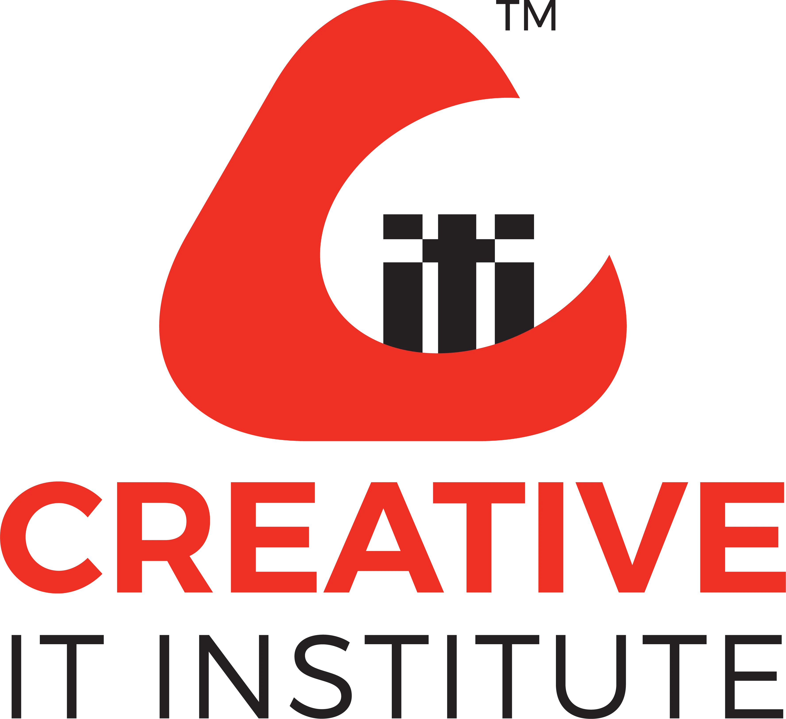

![]()
দলে ওপেনার মাত্র দুজন। টপঅর্ডার ও মিডলঅর্ডার ব্যাটসম্যান ৫জন। অধিনায়ক সাকিবের বাইরে বিশেষজ্ঞ স্পিনার ২জন। পেসার ৫জন। সাকিব আর মিরাজের পরিচয় যে অলরাউন্ডার, তা না বললেও চলে। বিশ্বকাপ হবে প্রায় দেড়মাস ধরে। এত বড় এবং লম্বা টুর্নামেন্টে তৃতীয় ওপেনারের অনুপস্থিতি ভোগাতে পারে বাংলাদেশকে।
আপনি দেখেন, কিছু কিছু ইনজুরি আছে আপনি ঝুঁকি নিতে পারেন না। টিম ম্যানেজমেন্ট কিন্তু বেকায়দায় পড়বে। আপনি দেখুন, নিউজিল্যান্ড সিরিজের প্রথম ম্যাচ খেলার পর দ্বিতীয় ম্যাচে...প্রথম ম্যাচ খেলেছে, দ্বিতীয় ম্যাচটা খেলেছে... এরপর কিন্তু শেষ ম্যাচে বিশ্রাম দিতে হয়েছে।’ ‘তামিম অন্যতম সেরা। কিন্তু চোটের দুশ্চিন্তা থাকলে নিজেকে মেলে ধরা কঠিন। মেডিকেলের সঙ্গে আলোচনা করেছি, নিজেদের মধ্যে আলোচনা করেছি। এটা আগেই বলেছি, এখন দল ঘোষণা করা হয়েছে।’
